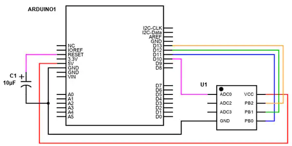
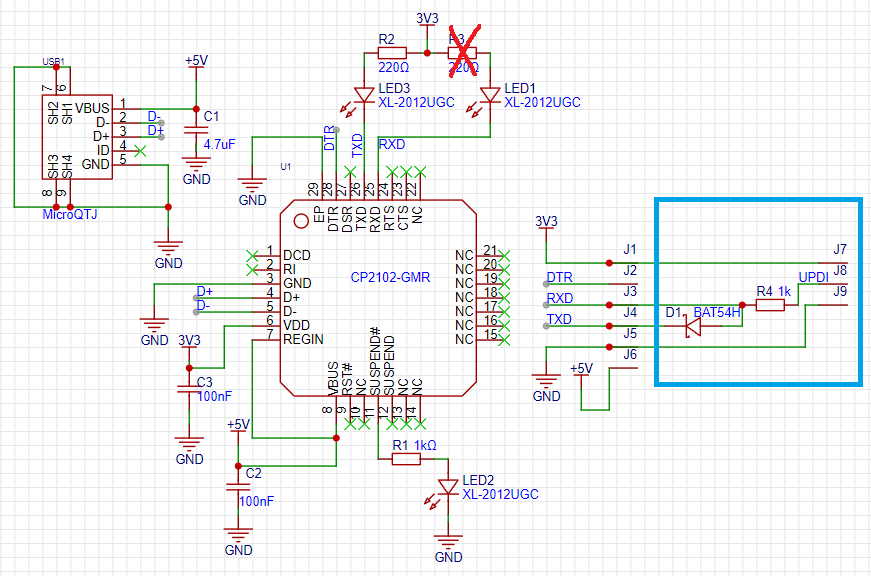

ATmega32u4
ATtiny85
开发板
USBASP连线及驱动配置
- 需连接的管脚：MISO、MOSI、SCK、RESET（PB0、1、2、5），以及VCC和GND，与烧写器上对应引脚相连。

- 下载Zadig，option-> List all devices，下拉菜单中选择USBasp，将驱动替换为libusbK(v3.1.0.0)
- Arduino的下载器选择USBasp
Arduino Uno烧写（ArduinoISP）的硬件连接（未测试）
- 接线（需要一个10uF电容） 
无bootloader固件烧写
- 参考1 （测试通过），参考2
- 在Preference中添加开发板管理器：
https://raw.githubusercontent.com/damellis/attiny/ide-1.6.x-boards-manager/package_damellis_attiny_index.json - 在开发板管理器中搜索
attiny并添加 - 选择相应的开发板、处理器，以及时钟
- 编程器选择USBasp（配置参考arduinoUSBASP连线及驱动配置）
- 在上传程序前需先执行烧入引导程序（“Burn Bootloader”），用来写入熔丝位（如需使用不同的内部时钟，或者低电压检测BOD设置，或者第一次烧写时选择时钟等），但并不会有bootloader占据空间。烧入引导程序会清除已有程序
IO中断
- 初始化
#include <avr/interrupt.h> #define INTERRUPT_PIN PCINT3 // This is PB3 per the schematic #define PCINT_VECTOR PCINT0_vect // This step is not necessary - it's a naming thing for clarit #define TOUCH_IN 3 // PB3 bool touched = false; void setup() { // setup touch input pin as pin change interrupt pin cli(); // Disable interrupts during setup PCMSK |= (1 << INTERRUPT_PIN); // Enable interrupt handler (ISR) for our chosen interrupt pin (PCINT3/PB3/pin #3) GIMSK |= (1 << PCIE); // Enable PCINT interrupt in the general interrupt mask pinMode(TOUCH_IN, INPUT); sei(); //last line of setup - enable interrupts after setup } - 中断处理
ISR(PCINT_VECTOR) { shutdown_counter = 0; if( digitalRead(TOUCH_IN) == HIGH ) touched = true; else touched = false; }
I2C
- SDA为PB0, SCL为PB2（SCK）
- 添加库tinyWireM（依赖于USI_TWI_Master）
- USI_TWI_Master库速度慢（如提高OLED屏幕刷新率）
打开
USI_TWI_Master.h，将修改为#define T2_TWI 5 //!< >4,7us #define T4_TWI 4 //!< >4,0us文档中有提到如何选择T2_TWI与T4_WTI#define T2_TWI 0 //!< >4,7us #define T4_TWI 0 //!< >4,0us
SPI
- 添加库tinySPI，时钟不可调，模式只有mode0和mode1
- （模式0？）SPI的输出为PB1（MISO/DO），输入为PB0（MOSI/DI），时钟为SCK，注意与TWI是反过来的
硬件和AVR mega的区别
看门狗寄存器名称
-
寄存器的区别
Type AVRmega ATTINY 看门狗 WDTCSR WDTCR TCNT1L TCNT1
开发时遇到的问题
循环层数受限？
- 可能是ATTINY85本身硬件（堆栈？cache？）限制？
如下代码中的最外层循环不能正常工作（
while (y<height)，不能超过三层循环？），将x、y通过与width、height的关系改为用idx表达后，三层循环可以正常工作
void OzOLED::drawBitmap(const byte *bitmap, byte cursor_x, byte cursor_y, byte width, byte height){
uint8_t x = cursor_x;
uint8_t y = cursor_y;
while (y < height){
while (x < width){
// load a 8x8 bit matrix each time
setCursorXY(x, y);
byte buffer[8] = {};
for (uint8_t i = 0; i < 8; i++){
byte temp = pgm_read_byte(&bitmap[(y*8)*width+i*width+x]);
for (uint8_t j = 0; j < 8; j++){
buffer[j] |= ( ((temp>>(7-j)) & 1) << i);
}
}
for (uint8_t i = 0; i < 8; i++){
sendData(buffer[i]);
}
x += 1;
}
y += 1;
}
}运行速度慢
- 使用的是
https://raw.githubusercontent.com/damellis/attiny/ide-1.6.x-boards-manager/package_damellis_attiny_index.json的Attiny85库，选择处理器Attiny85，时钟为Internal 8MHz。 解决方案为先选择烧入引导程序。damellis的库不带bootloader，但是烧录引导程序的时候会写熔丝位，将时钟选择为8MHz。
修改编译时的优化等级参数
- 打开
C:\Program Files (x86)\Arduino\hardware\arduino\avr文件夹，编辑platform.txt - 添加
# optimize_level = '-O0' # optimize_level = '-O1' optimize_level = '-O2' # optimize_level = '-O3' # optimize_level = '-Os' # optimize_level = '-Ofast' - 将文档内的
-Os修改为{optimize_level}（共三处）
ATtiny32
系统库的配置
- 系统库为megaTinyCore
- 配置方法：
- 在
首选项->附加开发板管理器网址中添加http://drazzy.com/package_drazzy.com_index.json - 选择
工具->开发板->开发板管理器，等待更新后安装megaTinyCore by Spence Konde - 选择对应的芯片/时钟等
- 在
烧写
- 传统ISP接口（未测试）或UPDI
UPDI：
jtag2updi（过时）
- 未测试
SerialUPDI（推荐）
-
连接方法
- 若使用模块，需移除Rx上的LED。
- 在UPDI到Tx之间添加二极管（推荐）或电阻。电流方向为从UPDI流向Tx。
- UPDI与Rx直连
- 在UPDI上添加一个保护电阻
- 配置了megaTinyCore后在
工具->编程器选择SerialUPDI - 230400 baud（或其它波特率） - 端口需选择USB转串口模块产生的虚拟串口号
- 使用
项目->上传即可上传固件
-
可用串口模块 - FTDI（未测试） - CP2102示例  - CH340（推荐，未测试）
IO中断
-
所有引脚均可触发中断
-
初始化
#define TOUCH_IN PIN_PA6 bool touched = false; void setup() { pinMode(TOUCH_IN, INPUT); cli(); // Disable interrupts during setup PORTA.PIN6CTRL = (PORTA.PIN6CTRL & ~PORT_ISC_gm) | PORT_ISC_BOTHEDGES_gc | PORT_PULLUPEN_bm ; sei(); //last line of setup - enable interrupts after setup }修改
PORT_ISC_BOTHEDGES_gc可以选择不同的触发方式。选项包括关键字 图示 详情 LEVELSense low level BOTHEDGESSense both edges FALLINGSense falling edges RISINGSense rising edges -
中断处理
ISR(PORTA_PORT_vect) { shutdown_counter = 0; if( digitalRead(TOUCH_IN) == HIGH ) touched = true; else touched = false; // clear interrupt PORTA.INTFLAGS = PIN6_bm; }注意，
PIN6_bm（定义为#define PIN6_bm 0x40）和PORT_INT6_bm（定义为#define PORT_INT6_bm (1<<6) /* Pin Interrupt bit 6 mask. */）是相同的数值。 -
只有Full asynchronous pin可通过任何一种触发形式将处理器从休眠中唤醒，其余pin只能通过
BOTHEDGES或LEVEL触发 -
参考：
看门狗
- 看门狗不再能够触发中断，现在只会在挂起时间过长后重置芯片。如果需要触发中断，需要用RTC（中断为
RTC_PIT_vect）替代（实现真随机数发生器）。
RTC/PIT
- 示例（参考）
#include <avr/sleep.h>
void RTC_init(void)
{
/* Initialize RTC: */
while (RTC.STATUS > 0)
{
; /* Wait for all register to be synchronized */
}
RTC.CLKSEL = RTC_CLKSEL_INT32K_gc; /* 32.768kHz Internal Ultra-Low-Power Oscillator (OSCULP32K) */
RTC.PITINTCTRL = RTC_PI_bm; /* PIT Interrupt: enabled */
RTC.PITCTRLA = RTC_PERIOD_CYC16384_gc /* RTC Clock Cycles 16384, resulting in 32.768kHz/16384 = 2Hz */
| RTC_PITEN_bm; /* Enable PIT counter: enabled */
}
ISR(RTC_PIT_vect)
{
RTC.PITINTFLAGS = RTC_PI_bm; /* Clear interrupt flag by writing '1' (required) */
}
void setup() {
RTC_init(); /* Initialize the RTC timer */
pinMode(7, OUTPUT); /* Configure pin#7 as an output */
set_sleep_mode(SLEEP_MODE_PWR_DOWN); /* Set sleep mode to POWER DOWN mode */
sleep_enable(); /* Enable sleep mode, but not going to sleep yet */
}
void loop() {
sleep_cpu(); /* Sleep the device and wait for an interrupt to continue */
digitalWrite(7, CHANGE); /* Device woke up and toggle LED on pin#7 */
}AVRDD
- AVR64DD